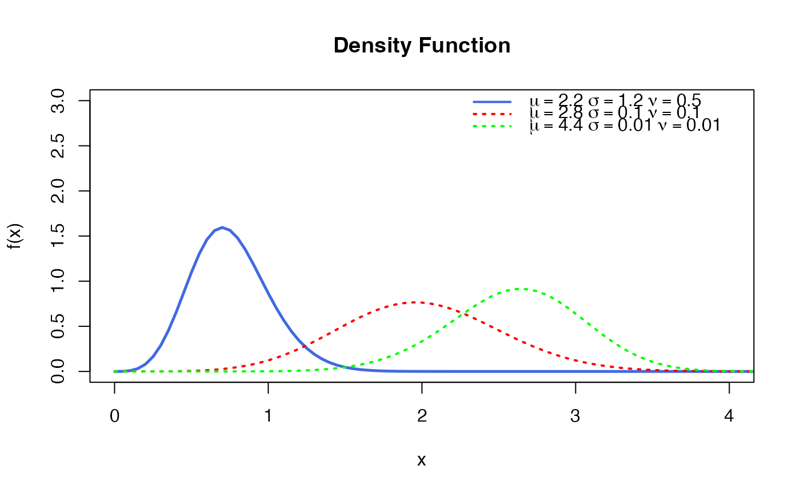
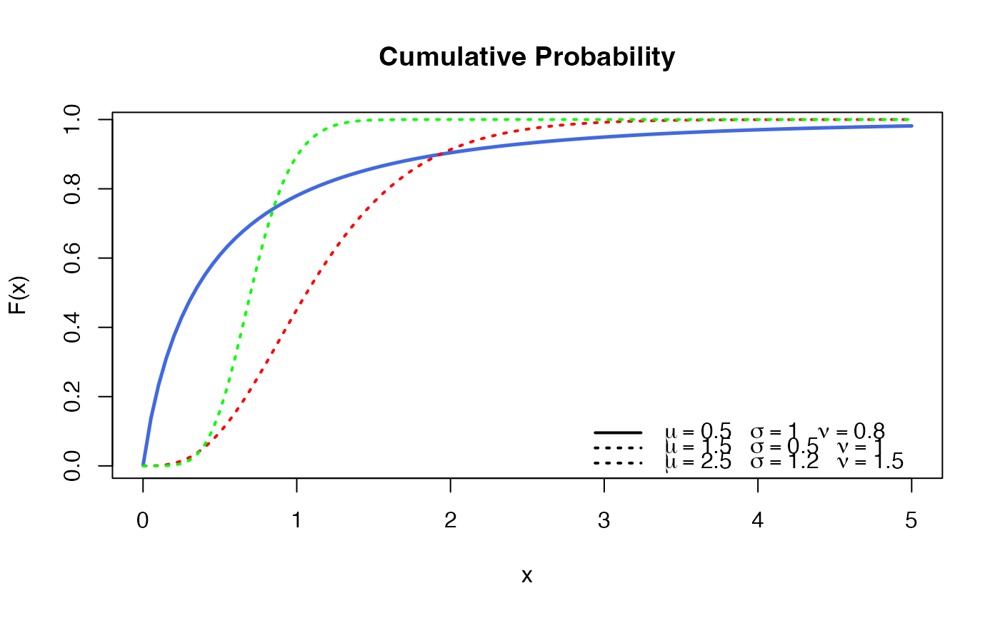
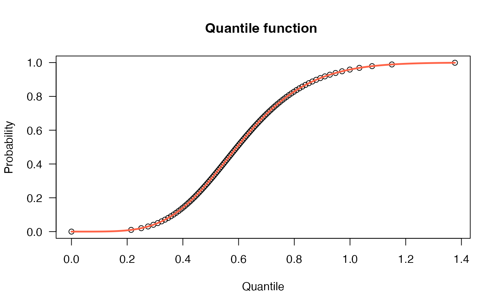
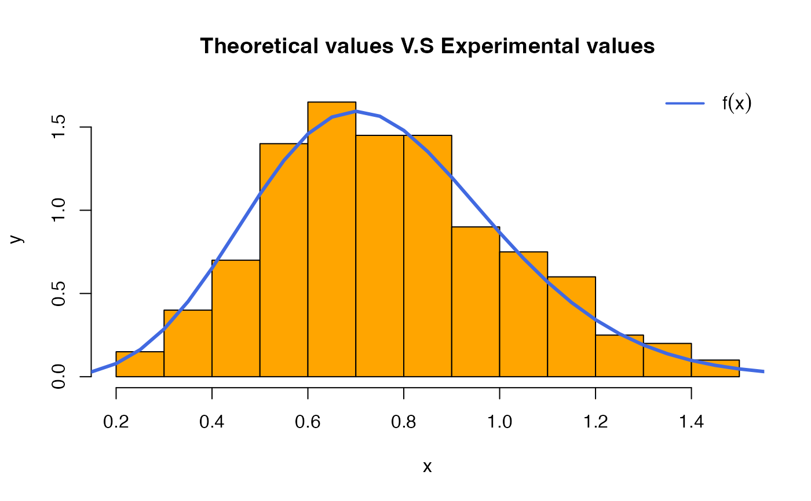

Density function, cumulative distribution function, quantile function,
random generation and hazard function for the
Modified Cosine-Weibull distribution with
parameters mu, sigma and nu.
Usage
dMCWEI(x, mu = 2.2, sigma = 1.2, nu = 0.5, log = TRUE)
pMCWEI(q, mu = 2.2, sigma = 1.2, nu = 0.5, lower.tail = TRUE, log.p = FALSE)
qMCWEI(p, mu = 2.2, sigma = 1.2, nu = 0.5, lower.tail = TRUE, log.p = FALSE)
rMCWEI(n, mu = 2.2, sigma = 1.2, nu = 0.5)
hMCWEI(x, mu = 2.2, sigma = 1.2, nu = 0.5)Arguments
- x, q
vector of quantiles.
- mu
parameter representing the shape parameter \(\phi\) (
mu > 0).- sigma
parameter representing the scale parameter \(\tau\) (
sigma > 0).- nu
parameter representing the additional modified cosine parameter \(\sigma\) (
nu != 0).- log, log.p
logical; if TRUE, probabilities p are given as log(p).
- lower.tail
logical; if TRUE (default), probabilities are P[X <= x], otherwise, P[X > x].
- p
vector of probabilities.
- n
number of observations.
Value
dMCWEI gives the density, pMCWEI gives the cumulative distribution
function, qMCWEI gives the quantile function, rMCWEI
generates random deviates and hMCWEI gives the hazard function.
Details
The Modified Cosine-Weibull with parameters mu, sigma and nu
has density given by
\( f(x | \mu, \sigma ,\nu) = \frac{\pi \mu \sigma \nu x^{\mu -1} e^{-\sigma x^{\mu}} \cos(\frac{\pi}{2} e^{-\sigma x^{\mu}})\sin(\frac{\pi}{2} e^{-\sigma x^{\mu}})}{e^{\nu} -1} \cdot e^{\nu \left( 1- \cos^2(\frac{\pi}{2} e^{-\sigma x^{\mu}}) \right) } \)
for \(x\ge 0\), \(\mu>0\), \(\sigma>0\) and \(\nu \neq 0\).
References
Su, R., Aloraini, N. M., Alkhathami, A. A., Alshanbari, H. M., & Khalifa, H. A. E. W. (2025). A new statistical distribution: Its empirical exploration using the reliability and lifespan data in fashion industry. Alexandria Engineering Journal, 116, 660-671.
See also
BS.
Author
Juan Andres Henao Arias, juhenaoar@unal.edu.co
Examples
# Example 1: Plotting the density function (dMCWEI) for different values.
mu_ <- c(2.8, 4.4)
sigma_ <- c( 0.1, 0.01)
nu_ <- c( 0.1, 0.01)
X_ <- seq(0.0001, 5, length=350)
curve(dMCWEI(x, log = FALSE), type = "l", col= "royalblue", lwd=2.5,
from = 0.001, to = 5, ylim=c(0,3), xlim = c(0,4),
xlab = "x", ylab = "f(x)")
title("Density Function")
colors <- c("red", "green")
for(k in seq(1, 2)) {
curve(
dMCWEI(x, mu=mu_[k], sigma=sigma_[k], nu = nu_[k], log = FALSE ),
type = "l", col = colors[k], lwd=2, lty = 3,
from = 0.001, to=5, add = TRUE)
}
legend("topright",
legend = c(
expression(mu==2.2 ~ sigma==1.2 ~ nu==0.50),
expression(mu==2.8 ~ sigma==0.1 ~ nu==0.10),
expression(mu==4.4 ~ sigma==0.01 ~ nu==0.01)
),
lwd=2,
col=c("royalblue",colors),
lty = c(1,3,3),
bty="n")

# Example 2: Plotting the Cumulative Distribution function
# (pMCWEI) for differente values.
parameters <- data.frame(
mu=c(0.5, 1.5, 2.5),
sigma=c(1,0.5,1.2),
nu=c(0.8,1,1.5))
colors <- c("royalblue", "red", "green")
curve(pMCWEI(x, mu=parameters$mu[1],
sigma = parameters$sigma[1],
nu = parameters$nu[1]),
lwd=2.5, col=colors[1],
from = 0.001, to=5,
xlab = "x", ylab = "F(x)")
title("Cumulative Probability")
for(k in seq(2, 3)) {
curve(pMCWEI(x,
mu=parameters$mu[k],
sigma = parameters$sigma[k],
nu = parameters$nu[k]),
lwd=2, col=colors[k], add = TRUE, lty=3)
}
legend(
"bottomright",
legend = c(
expression(mu==0.5 ~" " ~sigma==1 ~ " " ~ nu==0.8),
expression(mu==1.5 ~" " ~ sigma==0.5 ~ " " ~ nu==1.0),
expression(mu==2.5 ~" "~ sigma==1.2 ~ " "~nu==1.5)
),
lwd = 2, lty = c(1,3,3), bty="n")

# Example 3
# The quantile function
p <- seq(from=0, to=0.999, length.out=100)
plot(x=qMCWEI(p, mu=2.3, sigma=1.7, nu=1.3), y=p, xlab="Quantile",
las=1, ylab="Probability", main="Quantile function ")
curve(pMCWEI(x, mu=2.3, sigma=1.7, nu=1.3),
from=0, add=TRUE, col="tomato", lwd=2.5)

# Example 4: Generating a Random Sample for the distribution.
set.seed(5)
hist(rMCWEI(200), freq=FALSE, col = "orange",
xlab = "x", ylab = "y",
main = "Theoretical values V.S Experimental values")
curve(dMCWEI(x, log = FALSE), add = TRUE,
from = 0.0001, to=5, col="royalblue", lwd=3)
legend("topright",
legend = c(expression(f(x))),
lwd = 2, lty = 1, bty="n", col="royalblue")
